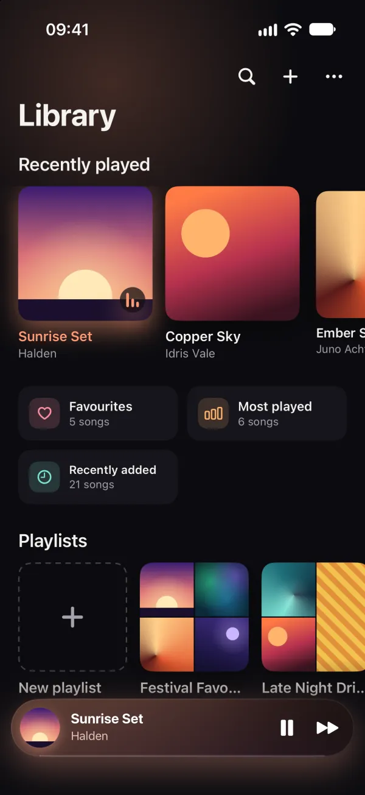
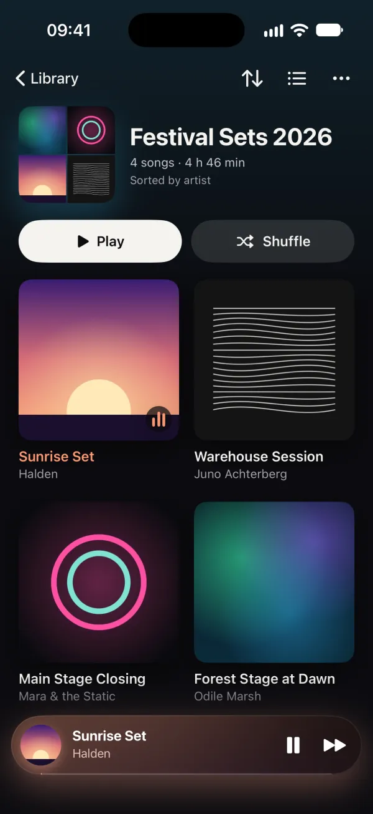

Real folders, not a database
Your folders are the library
The folders in My Music are the real folders on your device, the same ones you see in the Files app and in Finder.
- Drag whole folders in from your Mac or PC, import them from iCloud Drive or anywhere in Files, or share files to it from other apps.
- Rename, move or delete in the app or in Files, and the library keeps up by itself.
- Albums are recognised automatically; playlists are there when you want a mix across folders.

